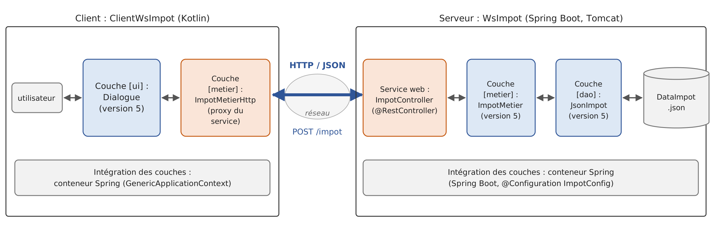
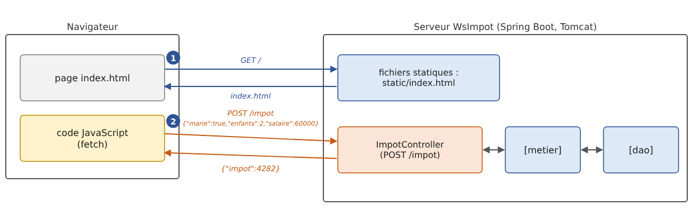

13. Web Services
13.1. Introduction
In the previous chapter, we presented several TCP/IP client-server applications. Since the clients and the server exchange lines of text, they can be written in any language. The client simply needs to know the communication protocol expected by the server.
Web services are also server applications (TCP/IP). They have the following characteristics:
- they are hosted by web servers, and the client-server exchange protocol is HTTP (HyperText Transfer Protocol), a protocol built on top of TCP/IP, which we explored in the previous chapter;
- the web service has a standard communication protocol, regardless of the service provided. A web service offers various services: S1, S2…, Sn. Each of these services expects parameters provided by the client and returns a result to the client. For each service, the client needs to know:
- how to specify the service Si;
- the list of parameters to be provided and their types;
- the type of result returned by the service. Once these elements are known, the client-server dialogue follows the same format, regardless of which web service is being queried. This standardizes client communication;
- To protect against attacks from the Internet, many organizations open only certain ports on their servers to the outside world: primarily ports 80 (HTTP) and 443 (HTTPS) for the web service. All other ports are locked. Consequently, client-server applications such as those described in the previous chapter are generally restricted to the organization’s private network (intranet). Hosting a service on a web server makes it accessible to the entire Internet community;
- the web service can be viewed as a remote object: the services it offers then become methods of that object. A client can use this remote object as if it were local, through an intermediary object called a proxy, which hides all network communication. This allows us to build a client that is independent of this layer: if the layer changes, the rest of the client does not need to be modified;
- As with the TCP/IP client-server applications from the previous chapter, the client and server can be written in any programming language. They exchange lines of text consisting of two parts: the headers required by the HTTP protocol and the message body, whose format is agreed upon between the client and the server.
The architecture of a web service-based client-server application is as follows:

This is an extension of the layered architecture from Chapter 6, to which specialized network communication layers are added: the client-side web service client and the web service itself on the server side. We have already encountered a similar architecture with the TCP tax calculation server (version 8) from the previous chapter.
13.1.1. Yesterday: SOAP and WSDL
In the 2000s, web services most often followed the SOAP standard (Simple Object Access Protocol). The client sent a HTTP request, whose body was a XML document: an “envelope” containing the name of the called method and its parameters. The server responded with another XML envelope containing the result. Each service was described by a XML document in WSDL format (Web Services Description Language), available at the service’s URL followed by [?wsdl]: it listed the methods, their parameters, and their types. Based on this document, tools automatically generated the service proxy.
In the JVM, these services were defined using the API and JAX-WS: an annotated class [@WebService], whose public methods (which might be annotated with [@WebMethod]) became the service’s methods; the [wsimport] tool generated the client proxy from the WSDL. JAX-WS was part of JDK from Java 6 through Java 10; it was removed in Java 11 (JEP 320) and now exists outside of JDK, under the name Jakarta XML Web Services. Kotlin, which was released (in version 1.0) in 2016, was not really around during that era: JAX-WS can be used from Kotlin just like any Java library, but new services rarely use it anymore. The reasons for this shift include the cumbersomeness of XML and SOAP envelopes, the complexity of the associated standards (WS-Security, WS-Addressing, etc.), and the difficulty of calling these services from a browser.
13.1.2. Today: REST and JSON
Most current web services follow the REST style (REpresentational State Transfer) and exchange JSON documents (JavaScript Object Notation, presented in Chapter 5). The REST style is based on the following principles:
- the service exposes resources, each designated by a URL: [/impot], [/clients/12], [/clients/12/commandes];
- these resources are accessed using the methods (also known as verbs) of the HTTP protocol, each of which has a specific meaning;
- the result of the action is indicated by the HTTP status code in the response;
- the body of requests and responses is most often a JSON document, which is more compact and simpler than XML;
- The service is stateless: each request contains all the information needed to process it; the server does not retain any information from one request to the next for a given client.
The most commonly used HTTP methods are as follows:
Method | Usage | Example |
GET | Read a resource; any parameters are in the URL | GET /clients/12 |
POST | Create a resource or request processing; the data is in the request body | POST /clients |
PUT | Replace a resource | PUT /clients/12 |
PATCH | Modify part of a resource | PATCH /clients/12 |
DELETE | Delete a resource | DELETE /clients/12 |
The status codes, which were introduced in the previous chapter, take on their full meaning here:
Code | Meaning |
200 OK | The request was successful; the response body contains the result |
201 Created | The resource was created; the [Location] header provides its URL |
204 No Content | The request was successful; the response has no body |
400 Bad Request | The request is invalid (missing or invalid parameter, etc.) |
404 Not Found | The requested resource does not exist |
415 Unsupported Media Type | The type of the document sent (header [Content-Type]) is not accepted |
500 Internal Server Error | An unexpected error occurred on the server |
A REST service does not have a mandatory equivalent in WSDL. However, it is common practice to describe it using a OpenAPI document (formerly Swagger), in JSON or YAML format, from which tools can generate documentation, test pages, and clients. We’ll come back to this later.
Finally, note gRPC, designed by Google: the service’s methods and their messages are described in a [.proto] file, from which tools generate the server and client, just as they did in the days of WSDL; the messages are encoded in a compact binary format (Protocol Buffers) and transmitted via HTTP/2. gRPC is highly efficient and popular for communication between services within the same organization, but it is ill-suited for browsers. It is available on JVM with the [grpc-java] library, supplemented for Kotlin by [grpc-kotlin] (the functions in [suspend] and [Flow], Chapter 9), which we will not be using.
13.1.3. Spring Boot and Spring MVC
To write our web services, we will use Spring Boot. In Chapter 6, we used the Spring Framework’s dependency injection container. This framework also includes a web module, Spring MVC, which associates a URL and a HTTP method with a function using annotations: [@RestController] on the class, [@GetMapping], [@PostMapping]… on its methods. Spring Boot (version 1.0 in 2014, version 4 in November 2025, with Spring Framework 7) simplifies the implementation of Spring:
- it automatically configures the application based on the available libraries: if Spring MVC and Jackson are present, it sets up everything needed for a web service JSON, without a single line of configuration;
- it embeds the web server within the application: the Tomcat server (version 11) is a simple library, launched by the main program. Therefore, there is no need to install a separate web server or application server (Tomcat, GlassFish, WildFly…), on which the application used to be deployed as a [.war] archive;
- it provides starters—dependencies that bundle everything needed for a specific use case. The [spring-boot-starter-webmvc] starter includes Spring MVC, Tomcat, Jackson 3 (Chapter 5), and logging (SLF4J and Logback);
- It provides a bill of materials (BOM), which specifies the versions of all these libraries—which are compatible with one another—and a Gradle plugin, [org.springframework.boot], which launches the application ([gradlew bootRun]) and packages it as a single executable file ([.jar]) ([gradlew bootJar]).
Spring is written in Java, but it has treated Kotlin as a first-class language since Spring Framework 5 (2017): its documentation provides examples in both languages, it supports Kotlin’s nullable types, can call primary constructors and their default values, and provides Kotlin-specific extension functions ([runApplication], [getBean<T>()], [registerBean<T>()] from Chapter 6…). Spring Boot isn’t the only solution: Jakarta EE (formerly Java EE) defines the API standard JAX-RS (Jakarta RESTful Web Services), and frameworks such as Quarkus, Micronaut, and Helidon are also widely used with Kotlin. Of particular note is Ktor, the JetBrains web framework written in Kotlin for Kotlin: its routes are described using a dedicated language (DSL) rather than annotations, and its handlers are [suspend] functions (Chapter 9). Spring Boot, however, is the most widely used, and it naturally builds on what we covered in Chapter 6.
13.2. A First Web Service
We’re going to build our first client-server application with the following simplified architecture:

The projects in this chapter form a Gradle multi-project build (Chapter 6), the [13-services-web] folder:
The file [settings.gradle.kts] lists the subprojects:
- lines 3–6: the plugin that allows Gradle to download JDK 25 itself if it cannot find it on the machine (Chapter 2);
- line 11: the six subprojects, identified by their folder names;
- line 14: the build for Chapter 6 is included in this one (composite build, already used in Chapters 10 and 11): the projects [WsImpot] and [ClientWsImpot] may depend on the modules from version 5 of the application [Impots] via their coordinates ([exemples.impots:impots-metier:5.0]), and Gradle will build these modules from their source code if necessary.
The root project declares the plugins used by the subprojects, along with their versions, without applying them:
- line 4: the Kotlin plugin, which we are familiar with;
- line 5: the [all-open] plugin for Spring, used in Chapter 6. In Kotlin, classes and their functions are final by default; however, Spring needs to derive subclasses (proxies) from them for some of its classes. This plugin makes the classes annotated by Spring ([@Configuration], [@Component], [@RestController], [@SpringBootApplication]…) and their methods;
- Line 6: the Spring Boot plugin.
The projects are already set up in the course code: the reader simply needs to open the [13-services-web] folder within IntelliJ IDEA, which recognizes it as a Gradle build, or enter the specified Gradle command in that folder. Services are launched using [gradlew :WsHello:bootRun] (the path [:WsHello] refers to the subproject), and console clients using [gradlew -q :ClientWsHello:run]. The command [gradlew build] builds all projects at once.
To create a Spring Boot project yourself, the easiest way is to use the Spring Initializr website: there, you select “Gradle - Kotlin” (a Gradle project whose build files are written in Kotlin), the Kotlin language, the Spring Boot version, the project name, and its dependencies (in this case, “Spring Web”), and then download a ZIP file containing a ready-to-use project: the files [build.gradle.kts] and [settings.gradle.kts], the Gradle wrapper, the main class, and the file [application.properties]. IntelliJ IDEA (Ultimate edition) offers the same wizard. For a Kotlin project, Spring Initializr automatically adds the dependencies [kotlin-reflect] and [jackson-module-kotlin], which we’ll discuss.
13.2.1. The server-side

The [build.gradle.kts] file in the [WsHello] project is as follows:
Comments:
- Lines 3–7: The three plugins, without a version specified—the version is determined by the root project. The Spring Boot plugin adds the task [bootRun] to the project, which compiles and runs the application, and the task [bootJar], which creates a file named [build/libs/WsHello-1.0.jar] containing the application and all its dependencies, which is then launched by [java -jar build/libs/WsHello-1.0.jar]. There is no need to apply the [application] plugin: the main class is found by the Spring Boot plugin, which looks for the [main] function;
- Line 19: the Spring Boot 4.1.1 version (the plugin version). The [platform] function imports into the project the versions of several hundred libraries, selected and tested together by the Spring Boot team. This is why the dependencies on lines 21–23 do not have versions. This is the equivalent of the parent project [spring-boot-starter-parent] in a Maven project;
- line 21: the web starter. It provides Spring MVC (Spring Framework 7.0), the embedded Tomcat 11 server, Jackson 3, and logging;
- line 23: the Kotlin reflection library. Java reflection ([java.lang.reflect]) sees only part of what the Kotlin code expresses: it does not know whether a parameter is nullable ([String?]), whether it has a default value, or what the primary constructor of a class is. Spring reads this information using [kotlin-reflect] (which decodes the metadata that the Kotlin compiler stores in each [.class] file): we’ll see that it uses this for optional parameters. The version used is that of the Kotlin plugin;
- line 31: the compiler’s [-java-parameters] option, which stores the names of function parameters in the [.class] files. Spring needs this to map a function parameter ([nom]) to the parameter of the same name in a URL, and Jackson needs it to map the constructor parameters of a data class to the properties of a JSON document (Chapter 5). The Spring Boot plugin already enables this option when it detects the Kotlin plugin; we’re including it here to make it explicit;
- lines 35–38: Programs launched by Gradle write their output to UTF-8 so that accented characters display correctly on Windows (Chapter 2).
The main class is as follows:
- line 7: the [@SpringBootApplication] annotation combines three annotations: [@Configuration] (the class can define beans, as in Chapter 6), [@EnableAutoConfiguration] (automatic configuration based on the available libraries), and [@ComponentScan] (Spring searches for annotated classes—controllers, configurations, etc.—in this class’s package and its subpackages);
- Line 8: The class has no body; it serves only to carry the annotation. Since it is (indirectly) annotated with [@Configuration], the [plugin.spring] plugin makes it non-final. Here, this is not essential: we have verified that the application also starts when the class remains final, since Spring does not need to derive a configuration class that does not define any beans. However, a configuration class that defines beans using [@Bean] functions—such as the tax calculation service—would cause the [@Configuration class '...' may not be final] error encountered in Chapter 6: the plugin takes care of this for you;
- lines 10–12: the main program is a high-level function, compiled into the [WsHelloApplicationKt] class. The function [runApplication<WsHelloApplication>(*args)], a Spring Boot extension function written in Kotlin, replaces the Java call [SpringApplication.run(WsHelloApplication.class, args)]: the type of the configuration class is passed as an argument of type ([reified], Chapter 4), and the [*] (spread) operator passes the elements of the [args] array to the [vararg] parameter of the function (Chapter 3). [runApplication] reads the configuration ([application.properties] file, environment variables, command-line arguments), creates the Spring container and its beans, starts the Tomcat server, and then returns control. However, the program does not stop: the Tomcat threads wait for requests until the application is terminated (Ctrl-C).
The application configuration is stored in the file [src/main/resources/application.properties]:
- line 2: the application name;
- line 4: the server listens on port 5100 (8080 by default). This value could also be passed as an argument: [gradlew :WsHello:bootRun --args=--server.port=5100], or via the environment variable [SERVER_PORT];
- line 6: By default, Spring Boot displays a large banner with the text ASCII at startup; we remove it;
- line 8: the format of log messages. The default format is very comprehensive (date, level, process ID, application name, thread, full class name, message) but results in very long lines. We’ll reduce it to the time, the message level, the thread name, the short name of the issuing class ([%logger{0}]), and the message.
The web service itself is the class [HelloController]. It provides a function that returns the string [Bonjour Mme xx], where xx is the received name:
Comments:
- Line 8: The annotation [@RestController] designates the class as a controller: Spring creates a single instance (a singleton) of it at startup and routes requests of the form HTTP to it, where URL corresponds to one of its functions. The result of each method is sent as-is to the client, in the response body;
- lines 12–13: The annotation [@GetMapping("/")] associates the method HTTP GET with the URL [/] (the site root) with the function [accueil], which returns text explaining how to use the service. The function has an expression body ([= ...]): its type, [String], is inferred. The curly braces in [{nom}] are nothing out of the ordinary in a Kotlin string: only the character [$] introduces a template;
- Lines 18–19: The template for URL (known as the path) [/hello/{nom}] contains a variable [{nom}]: it corresponds to any segment of URL placed after [/hello/]. Thus, URL [/hello/Carla%20Bruni] assigns the value [Carla Bruni] to [{nom}] (the code [%20] represents a space in URL). The annotation [@PathVariable] instructs Spring to pass this value to the function’s parameter of the same name: this is data binding. The function returns a string, constructed using a template: this string is sent as-is to the client as a text document (type [text/plain]);
- lines 22–23: the same process, but the function returns an object of type [Salutation]. Spring serializes it to JSON using Jackson (Chapter 5) and sends it to the client as a document of type [application/json]. This is the standard format for a REST web service response;
- line 26: the result type, a data class (Chapter 4) nested within the controller (the equivalent of a Java record). Jackson serializes it using its accessors [getNom()] and [getMessage()], generated by the compiler: each property becomes a JSON property with the same name.
The service is launched by the command [gradlew :WsHello:bootRun], entered in the [13-services-web] folder (or [..\gradlew bootRun] entered in the [WsHello] folder: the wrapper is at the root of the project). The application’s execution directory is that of the subproject. It displays its log (the course has abbreviated the paths in line 2 to [...] and omitted the Gradle messages):
- Line 2: the application startup, the Java version, and the runtime directory, which is the project directory. Note the name [WsHelloApplicationKt]: Spring Boot names the application after the class containing the [main] function—in this case, the class generated by the Kotlin compiler for the [WsHelloApplication.kt] file, not the [WsHelloApplication] class;
- line 3: Spring allows you to define profiles (development, test, production, etc.) that enable different configurations ([application-dev.properties] files, etc.). No profile is active here;
- Lines 4–6: The embedded Tomcat server is created; it will listen on port 5100;
- line 7: The Spring container is ready: it has created its beans, including our controller;
- lines 8–9: Tomcat is now accepting connections; the application is ready. Startup took about fifteen seconds on our test machine, which is rather slow (and busy with other tasks); it usually takes two or three seconds;
- lines 10–12: these messages appeared during the first request: the Spring servlet [DispatcherServlet], which receives all requests and distributes them among the controller methods, is only initialized at this point. A servlet is a Java component that processes requests in a web server such as Tomcat (Jakarta Servlet); Spring is built on top of this. The thread name, [http-nio-5100-exec-1], indicates that the request is being processed by one of the Tomcat server’s threads;
- lines 13–14: these messages appeared when the server was shut down using Ctrl-C, after the tests described in the following paragraphs: the shutdown is “graceful”; Tomcat completes any pending requests before shutting down.
Each log message includes its time, level ([TRACE], [DEBUG], [INFO], [WARN], [ERROR]), the thread that sent it, and the sender class. Messages at level [INFO] and above are displayed by default; the [logging.level.<paquetage>=DEBUG] property also displays lower-level messages for a given package.
13.2.2. Querying the service with curl
While the service is running, let’s query it in a second command window using the [curl] tool introduced in the previous chapter. The [-i] option displays the response headers before the body, and the [-s] (silent) option suppresses the progress bar:
- Line 2: The request was successful. Tomcat does not send the text that usually follows the status code ([OK]): it has been optional since HTTP/1.1 (and no longer exists in HTTP/2); only the code matters;
- Line 3: The document is text (UTF-8);
- line 4: the document size, in bytes;
- line 5: the response time, always expressed in Coordinated Universal Time (GMT) in the HTTP headers, whereas the server log uses local time;
- line 7: the result of the function [hello].
Now let’s request the JSON version:
- line 3: the document is now of type [application/json]. It is not necessary to specify the character set: a JSON document exchanged over the network is always encoded as UTF-8 (RFC 8259);
- Line 7: the serialized [Salutation] object. The properties JSON have the same names as the properties of the data class, [nom] and [message], and are listed in the order of its primary constructor. This was not obvious: by default, Jackson 3 sorts the properties of an ordinary class in alphabetical order (we’ll see this with the [ProblemDetail] class), but it first lists, in their order, those that are parameters of the constructor it chose to create the objects. Thanks to the [javaParameters] option, it knows the names of these parameters and recognizes the primary constructor of the data class. Since the Kotlin names are already in “camelCase,” “JavaScript,” and “JSON,” there is nothing to convert.
A URL that does not match any route returns a 404 response:
- Line 4: The document is sent in chunks, each preceded by its size; the server did not have to calculate the total size of the document before starting to send it;
- line 7: the error document generated by Spring Boot: the date, the status code, its text, and the requested path. For security reasons, it contains neither the message of any exception nor the call stack (properties [server.error.include-message] and [server.error.include-stacktrace], disabled by default). We’ll see in the next service how to obtain a standardized error document.
You can also type URL [http://localhost:5100/hello/Carla Bruni] into a browser’s address bar, which will display the received text: a web service queried by GET can be tested very easily.
13.2.3. A console client

It is possible to write the service client using a simple TCP client, as in the previous chapter: simply send the request HTTP and read the response. However, we use the [java.net.http.HttpClient] class from JDK (Java 11), which was also introduced in the previous chapter; it handles the HTTP protocol for us and uses Jackson for the JSON documents. The [ClientWsHello] project is a standard Kotlin project, whose [build.gradle.kts] file declares the Jackson dependency and the main class:
- line 3: the Jackson 3 dependency; it has a version because this project does not use the Spring Boot naming convention;
- line 11: Jackson needs the constructor parameter names to create a [Salutation] object from a JSON document (Chapter 5);
- Lines 15–17: the main class, executed by [gradlew -q :ClientWsHello:run];
- Lines 20–22: The program reads from the keyboard.
The program is as follows:
Comments:
- line 13: the service’s response, JSON, will be deserialized into a [Salutation] object. The client does not have access to the server’s [Salutation] type: it declares its own, a data class with the same property names. A client does not share the server’s code, only the format of the exchanged documents;
- Line 18: The service's URL is passed as an argument; otherwise, it defaults to [http://localhost:5100/]: if the service's address changes, the client does not need to be recompiled. [firstOrNull()] returns the first element of the array, or [null] if it is empty, and the Elvis operator [?:] replaces this [null] with the default URL;
- line 20: the JSON converter from Jackson 3 (Chapter 5);
- line 23: a single [HttpClient] for the entire program. It manages a set of reusable connections and must be shared, not recreated for each request. Starting with Java 21, [HttpClient] implements [AutoCloseable]: the Kotlin function [use] (Chapter 3) closes it at the end of the block, even if an exception occurs;
- lines 26–27: the question, followed by reading the answer; at the end of the stream, [readlnOrNull] returns [null], which the Elvis operator converts to an empty string;
- line 33: the entered name becomes a segment of URL: characters not allowed there must be encoded. [URLEncoder.encode] encodes the “é” as [%C3%A9], but it is designed for form parameters, where a space is encoded as [+]. In a URL path, the space must be encoded as [%20]: so we replace the [+] (a valid [+] entered is encoded as [%2B] and is not affected). [Charsets.UTF_8] is the Kotlin constant for the character set UTF-8 (the Java constant, [StandardCharsets.UTF_8], also works);
- line 35: the [resolve] method of the [URI] class constructs a URL from the base URL and a relative URL. Note: The base URL must end with [/] for [hello/...] to be added to it. The [get] function is called as a method of [HttpClient]: it is an extension function, defined below;
- lines 38–39: The response JSON is deserialized into a [Salutation] object using Jackson’s [readValue] method;
- lines 41–43: The [ConnectException] exception is thrown when a connection to the service is impossible, for example, when no service is listening at the specified address. It has no message; we construct one. The name [_] indicates that the exception is not used. This [catch] must precede the one on line 44, because [ConnectException] is derived from [IOException];
- lines 44–46: other communication errors and error responses from the service (see line 59);
- lines 54–61: a GET request, whose response body is rendered as a string. We wrote it as an extension function of the [HttpClient] class (Chapter 4): within its body,
[send]refers to the[send]method of the client on which it is called (*[this]*). In Java, this was a static method that took the client as a parameter; - line 55: the request is built using a builder: URL, the HTTP method, and then [build];
- Line 56: The [send] method sends the request and waits for the response. Its second parameter, a [BodyHandler], specifies what to do with the response body: [ofString] reads it entirely into a string, decoded according to the character set specified by the [Content-Type] header (UTF-8 by default). [send] calls [IOException] in the event of a communication error and [InterruptedException] if the thread is interrupted while waiting. Since Kotlin does not have checked exceptions, neither the [get] function nor the [main] function need to declare them ([throws IOException, InterruptedException] in Java);
- Lines 58–59: Unlike other libraries, [HttpClient] does not treat an error status code (4xx, 5xx) as an exception: the response is returned normally, and it is up to us to examine its status code. Here, we trigger a [IOException] for any code other than 2xx.
Results, with the service running (the input data, provided to the program via a redirect, was reinserted after the queries):
Line 4 displays the received [Salutation] object, in the format of the [toString] function generated for the data classes: [Salutation(nom=…, message=…)], where a Java record previously displayed [Salutation[nom=…, message=…]]. The Gradle option [-q] (quiet) suppresses its own messages. If you specify an address where no service is listening, the connection is refused:
And if the service’s URL is incorrect, the service returns a 404:
The client’s [Salutation] class has two non-nullable properties of type [String]. What would happen if the service omitted one of them—[message], for example? Jackson would call the constructor with the value [null] for the parameter [message], and it is the code generated by the Kotlin compiler—which checks at the entry point of every public function that its non-nullable parameters are not [null]—that would reject this value. We verified this with a small test program:
Safety with respect to [null] is therefore preserved, even for objects created via reflection. A missing property of type [Int], on the other hand, is rejected by Jackson 3 itself (***[Cannot mapnullinto typeint]***). To allow a property to be missing, it is declared as nullable ([String?], [Int?]); this is what we will do in the following services. Jackson’s Kotlin module, [jackson-module-kotlin] (dependency [tools.jackson.module:jackson-module-kotlin]), goes a step further: it includes default values for parameters (a missing property takes the default value) and provides more specific error messages. It also provides the extension function [mapper.readValue<Salutation>(json)], which replaces [mapper.readValue(json, Salutation::class.java)]. When it is included among the dependencies of a Spring Boot application, the application automatically registers it with Spring’s JSON converter (MVC); Spring Initializr also adds it to Kotlin projects. We won’t be using it in this course, as the data classes and the [javaParameters] option are sufficient for our needs.
With a SOAP service, the client used a proxy generated from the service’s WSDL and called the remote method as if it were a local method. Here, we call the service’s URL directly. We will write a true proxy for the tax calculation service.
13.2.4. Service description: OpenAPI
The WSDL described a SOAP service in a standardized format. Its current equivalent is the OpenAPI document. For Spring Boot, the [springdoc-openapi] library ([org.springdoc:springdoc-openapi-starter-webmvc-ui] dependency) generates it without a single line of code: it scans the controllers and their annotations at startup and publishes the document to URL and [/v3/api-docs], as well as an interactive test page, Swagger UI, to URL and [/swagger-ui.html]. The document describes each route: its URL, its method HTTP, its parameters and their types, and the schema JSON for its responses. With Kotlin, it takes into account the nullability of types: a property of type [String] is declared required, while a property of type [String?] is optional. Generators such as OpenAPI Generator use this to generate a typed client in various languages (including Kotlin), just as [wsimport] did with WSDL. This library is not part of Spring Boot, and we will not be using it in this chapter.
13.3. A Web Service for Arithmetic Operations
The previous service offered a single function. We will now consider a web service that provides the four arithmetic operations: add(a, b), subtract(a, b), multiply(a, b), and divide(a, b). We will use this opportunity to explore the two ways to pass parameters to a web service and how to report errors.
13.3.1. The Server Side
The [WsOperations] service accepts two types of requests:
Request | Parameters |
GET /add?a=1.5&b=2 | The operation in the URL path, the numbers in its query string |
POST /calculate | a document JSON in the request body: [{"operation":"ajouter","a":1.5,"b":2}] |
In both cases, the response is a document JSON: [{"operation":"ajouter","a":1.5,"b":2.0,"resultat":3.5}]. GET is suitable for simple requests that do not modify anything on the server: URL can be typed into a browser, bookmarked, and its response can be cached. POST is suitable for large or structured data. The project’s [build.gradle.kts] file is the same as [WsHello], except for the comment, and its [WsOperationsApplication.kt] file is identical to [WsHello], except for the names ([WsOperationsApplication], package [wsoperations]). Its [application.properties] file is as follows:
- line 4: the service is listening on port 5110;
- line 6: errors detected by Spring MVC itself (unknown URL, invalid JSON document, unsupported document type, etc.) will be reported via a response in the Problem Details format. This format, standardized by RFC 9457, is a JSON document of type [application/problem+json] that describes an error: its type, a title, the status code, a detail, and any additional information. This is the standard way for a REST service to indicate what is wrong.
The validator is as follows:
Comments:
- Lines 20–25: the GET request. The [operation] parameter of the function is linked to the route variable [{operation}] ([@PathVariable]). The parameters [a] and [b], annotated as [@RequestParam], are linked to the parameters of the same name in the query string ([?a=1.5&b=2]). They are optional: a missing parameter defaults to [null]. In Java, you had to write it as ([@RequestParam(required = false) String a]); in Kotlin, you simply declare the parameter as nullable, [String?]: Spring reads the nullability of the type via [kotlin-reflect] and infers that the parameter is optional. Conversely, a non-nullable parameter ([String]) is required: Spring would reject a request missing this parameter with a 400 response. The declared type therefore tells both the compiler and Spring what might be missing;
- lines 23–24: [a] and [b] are declared as type [String?]. We could have declared them as type [Double?]: Spring would then have performed the conversion itself and rejected an incorrect value with a 400 response to the generic message. By receiving them as strings, we retain control over the error messages;
- line 25: the function has an expression body. Its return type, [ResponseEntity<*>], is explicitly specified: the asterisked type [*] (Chapter 4) denotes a response whose body type is unspecified, equivalent to Java’s [ResponseEntity<?>];
- lines 29–31: the request POST. The parameter [demande], annotated as [@RequestBody], is constructed by Jackson from the request’s body JSON. The properties of the [DemandeCalcul] class are nullable (line 79): a property missing from the JSON document is then set to [null], which allows it to be detected;
- Line 35: Converting a string to a number; if the conversion fails ([null]), it is written as an expression. The operator [?.] propagates the [null] of a missing string; the Kotlin function [toDoubleOrNull] returns [null] instead of throwing an exception; the function [takeIf] returns its object if the condition is true, [null] otherwise: here, it rejects the values [NaN] and infinities, which [toDoubleOrNull] accepts (texts [NaN] and [Infinity]). In both URL and JSON, numbers are written with a decimal point: [toDoubleOrNull], which is independent of the system language, is therefore the correct tool (and not [NumberFormat], which would expect a comma on a French server; see Chapter 5). In Java, a block of [try]/[catch] was needed around [Double.parseDouble];
- line 40: the operation name, in lowercase. The Kotlin function [lowercase] performs the conversion regardless of the system language (it uses [Locale.ROOT], which had to be specified in Java);
- lines 42–47: the requested operation is represented by a function of type [(Double, Double) -> Double] (Chapter 7), which is nullable: [((Double, Double) -> Double)?]. A [when] expression selects the lambda corresponding to the operation; [null] is used for an unknown operation. The declared type of
*[calcul]allows the compiler to infer the types of the lambda parameters*[x]and*[y]*; - lines 50–64: The three parameters are validated. If any of them is incorrect, an error list is constructed: a dictionary that associates each parameter with its list of error messages. The function [buildMap], which belongs to the same family as [buildString] and [buildList] (Chapter 5), creates a mutable dictionary, passing it as a receiver ([this]) to the block, where [put] fills it and then sets it to read-only; it preserves the insertion order;
- lines 60–64: the 400 response. The Spring class [ProblemDetail] represents a “Problem Details” document: [forStatus] creates it with a status code. The [apply] function (Chapter 4) executes the block with the created object as the receiver, then returns that object: its title is set by writing the [title] property (Kotlin treats the Java methods [getTitle]/[setTitle] as properties) and, using [setProperty], adds any property—in this case, [errors], the list of errors. The class [ResponseEntity] represents a complete HTTP response: status code, headers, and body. [ResponseEntity.badRequest()] prepares a 400 response, and [body] provides its body;
- line 66: After the [return] on line 64, the compiler knows that [calcul], [a], and [b] are not [null]: these are local variables (or parameters) that can no longer change. It now treats them as values of non-nullable types [(Double, Double) -> Double] and [Double]: this is the “smart cast” discussed in Chapter 3. We structured the test to take advantage of this: the Java code tested each parameter separately and accumulated errors in a dictionary, then checked whether the dictionary was empty; however, this final check would not tell the compiler anything about [a] and [b];
- Lines 68–72: Division by zero results in a 400 response, and this time the document includes a detail ([forStatusAndDetail]). This rejection is necessary: dividing a [Double] by zero does not throw an exception but returns infinity ([Double.POSITIVE_INFINITY]), which a JSON document cannot represent (Jackson would write it as a string, ["Infinity"]). The test [b == 0.0] compares two [Double] values: the literal must be [0.0], because Kotlin refuses to compare a [Double] with a [Int] ([b == 0] causes a compilation error for [operator '==' cannot be applied to 'Double' and 'Int']);
- line 75: the 200 response, whose body is the [ResultatCalcul] object serialized to JSON. [calcul(a, b)] calls the function selected above;
- lines 79–82: the two types exchanged with clients. These objects, which serve only to transport data between two applications, are called DTO (Data Transfer Object). Data classes are ideal for this purpose. The properties of [DemandeCalcul], received from the client, are nullable; those of [ResultatCalcul], produced by the service, are not.
The two controller functions return the type [ResponseEntity<*>]: a response whose body can be of any type, in this case a [ResultatCalcul] or a [ProblemDetail]. Spring examines the actual type of the body to serialize it; it assigns the document the type [application/json], or [application/problem+json] for a [ProblemDetail].
13.3.2. Tests with curl
The service is launched by [gradlew :WsOperations:bootRun]. An addition:
The number 2 has become 2.0: Jackson always writes a [Double] with its decimal part. For a client—JavaScript in particular—it’s the same number. A division by zero:
- Line 2: The request is denied;
- line 3: the body is a “Problem Details” document;
- line 6: After a 400 response, Tomcat closes the connection as a precaution: an invalid request could have left unexpected data in the connection. The client will open another connection for its next request;
- line 8: the document contains the properties [title], [status], and [detail], set by our code, and [instance], added by Spring: the path of the request that caused the error. The property [type]—a URL that documents the error type—is missing: the RFC 9457 then assigns it the value [about:blank], which means that the status code is sufficient to describe the problem. Note that the properties are sorted alphabetically: this is the default behavior of Jackson 3 for a regular Java class such as [ProblemDetail], whose objects are not created by a parameterized constructor; data classes, as we have seen, retain the order of their primary constructor.
An unknown operation, a number written with a decimal point, and a missing number:
The document’s [errors] property contains the validation errors, parameter by parameter; added by [setProperty], it is placed after the normalized properties. The parameter [b], which is missing from URL, was indeed received as [null]: it is optional because it is nullable. Now a request for POST. The [-d] option of [curl] sends the text that follows it in the body of a POST request, and the [-H] option adds a header to the request, in this case the type of the document being sent:
A property missing from the document JSON, here [operation], is received as [null] thanks to the nullable type of the [operation] property of [DemandeCalcul]; the operation is then unknown:
If the JSON document sent is incorrect, Jackson cannot construct the [demande] parameter: Spring returns a 400 error on its own, without executing our function:
The “Problem Details” document on line 8 was generated by Spring MVC, thanks to the [spring.mvc.problemdetails.enabled] property; without it, we would get the Spring Boot error document seen with [WsHello]. The same applies if the [Content-Type] header is omitted: [curl] then sends the body as a HTML form, and Spring rejects this type of document:
Error code 415 (Unsupported Media Type) means that the type of document sent is not accepted; the [Accept] header on line 3 tells the client which types are accepted.
13.3.3. The client side
Our console client requests the operation and the two numbers on a single line, then queries the service twice: first with GET, then with POST, to demonstrate both methods. Its [build.gradle.kts] file is identical to [ClientWsHello], except for the project and main class names ([clientwsoperations.MainKt]). Its program is as follows:
1 2 3 4 5 6 7 8 9 10 11 12 13 14 15 16 17 18 19 20 21 22 23 24 25 26 27 28 29 30 31 32 33 34 35 36 37 38 39 40 41 42 43 44 45 46 47 48 49 50 51 52 53 54 55 56 57 58 59 60 61 62 63 64 65 66 67 68 69 70 71 72 73 74 75 76 77 78 79 80 81 82 83 84 85 86 87 88 89 90 91 92 93 94 95 96 97 98 99 100 101 102 103 104 105 106 107 108 109 110 111 112 113 114 115 | |
Comments:
- Lines 14–23: the client’s DTO files. They are declared here again: a client does not share the server’s code, only the format of the exchanged JSON documents. The properties of [DemandeCalcul] are not nullable: the client sends only complete requests. Spring’s [ProblemDetail] class is part of the web framework; a simple data class is sufficient for the client. Its properties are nullable: a property missing from the document, such as [detail] or [errors], is treated as [null];
- line 27: Numbers are entered and displayed in the system language’s format, in this case French: decimal point. [FORMAT] is a top-level property, private to the file;
- line 33: Starting with Jackson 3, properties JSON that are unknown to the class (here, [instance]) are ignored by default during deserialization;
- lines 43–49: the input is split into fields using a regular expression (one or more spaces), then the list of three elements is unpacked into three variables (Chapter 3): the declaration [val (operation, texteA, texteB) = champs] calls the functions [component1()], [component2()], and [component3()] from the list;
- Lines 50–58: The numbers are verified locally before any service call is made. A service must always verify its parameters (since it does not know who is calling it), but a client can avoid unnecessary network traffic. After [continue] on line 59, the compiler knows that [a] and [b] are not [null]: they are now of type [Double] (intelligent type conversion);
- line 61: the text describing the calculation, with the numbers in French format;
- line 64: the URL from the GET query. Numbers must be written with a decimal point: a [Double] inserted into a string template is converted by its function [toString], which is independent of the system language. The operation, entered by the user, is encoded as [URLEncoder];
- lines 66–67: the request GET;
- lines 68–70: if successful (status code 200), the response JSON is deserialized into a [ResultatCalcul] object;
- lines 72–73: if the request fails, the status code and the received document are displayed as-is;
- lines 75–77: the exception [IOException] indicates a communication error, such as an unreachable service;
- lines 82–86: the POST request. The [DemandeCalcul] object is serialized into JSON by [writeValueAsString]; the request receives the header [Content-Type], followed by its body: [BodyPublishers.ofString] sends a string, encoded as UTF-8;
- Lines 94–98: If the validation fails, the body is a “Problem Details” document, deserialized into a [Probleme] object, whose title, details, and validation errors are displayed. The nullable properties [detail] and [errors] are handled by the operator [?.]: [probleme.detail?.let { ... }] executes the block only if the detail exists ([it] is then of type [String]), and [probleme.errors?.forEach { ... }] only iterates through the dictionary if it exists. The lambda passed to [forEach] receives each element of the dictionary ([Map.Entry]), unpacked into [(parametre, messages)] (Chapter 7); the function [joinToString] combines the messages from a parameter;
- lines 110–114: reading a number in French format. The method [parse(String, ParsePosition)] of [NumberFormat] reads the beginning of the string and indicates in the object [ParsePosition] where it stopped (property [index], Java method [getIndex()]): if it did not stop at the end, the input contains extra characters ([2,5x]). [parse] returns a [Number] (or [null]), converted by [toDouble()].
Results, with the service running (inputs replaced after the queries):
- line 3: the URL from the query GET: the number 1.5 entered there is written as 1.5;
- Lines 6–8: The same error observed in both queries: the raw document for query GET, and its processing for query POST;
- Lines 10–12: The unknown operation was detected by the service;
- line 14: the incorrect number was detected by the client, which did not query the service.
13.4. Sample Application—Version 9: A Web Service for Calculating Taxes
We’ll revisit the tax calculation application. In the previous chapter (version 8), we had created a server named TCP that could be queried remotely, using its own communication protocol. We’ll now turn it into a web service named REST.
13.4.1. The Architecture
The architecture of version 9 is as follows:

- on the server side, the [WsImpot] web service receives HTTP requests and has them processed by the [metier] and [dao] layers from Version 5 (Chapter 6), which are reused as-is;
- on the client side, the [ui] layer from version 5 is also reused as-is. It communicates with a new type of [metier] layer, [ImpotMetierHttp], which implements the [IImpotMetier] interface by querying the web service: it acts as a proxy for the service. The [ui] layer is unaware that the calculation is performed on another machine;
- on both sides, the integration of the layers is handled by Spring’s dependency injection container, as in version 5.
13.4.2. The web service
The service contract is as follows:
Request | Response on success | Response in case of an error |
GET /tax?spouse=o&children=2&salary=60000 | 200: [{"impot":4282}] | 400: "Problem Details" document |
POST /impot with the body [{"marie":true,"enfants":2,"salaire":60000}] | 200: [{"impot":4282}] | 400: "Problem Details" document |
The [WsImpot] project depends on the [impots-dao] and [impots-metier] modules from version 5. Thanks to the composite build declared in [settings.gradle.kts] ([includeBuild("../06-architectures")]), Gradle finds them directly in the Chapter 6 folder and builds them as needed: unlike with Maven, there is no need to install them in a local repository beforehand. The dependencies of the [build.gradle.kts] file from [WsImpot] are as follows (the rest of the file is the same as [WsHello], except for the project coordinates: [exemples.impots:WsImpot:9.0]):
- lines 2–5: the dependencies of any Spring Boot service written in Kotlin;
- line 8: the [impots-metier] module from version 5, identified by its coordinates. It declares the module [impots-dao] as a dependency of its API ([api(project(":ImpotsV5:impots-dao"))], Chapter 6): this module is therefore also visible to the service, along with the classes [IImpotDao], [JsonImpot]… from the [dao] and [TrancheImpot] layers, and [ImpotException] from the [entites] layer. The [impots-dao] module depends on Jackson 3, which the web starter already provides; therefore, the version selected by the Spring Boot dependency list is used.
The configuration file [application.properties] is as follows:
- line 4: the service listens on port 5120;
- Lines 13–14: the configuration for the [dao] layer, in the same format as in the [impots.properties] file from version 5: the implementation to use and its data file. These are not Spring Boot properties, but properties specific to our application: a [application.properties] file can contain as many as desired. Here we are using the files JSON and [DataImpot.json], located in the project folder, which is the service’s runtime folder along with [gradlew :WsImpot:bootRun].
The [dao] and [metier] layers are integrated into the Spring container via a configuration class:
Comments:
- Lines 17–18: The [dao.*] configuration properties are grouped into an object of type [DaoProperties], a data class. The [@ConfigurationProperties("dao")] annotation instructs Spring Boot to map the properties with the prefix [dao] to the constructor parameters of the same name: [dao.implementation] to the parameter [implementation], [dao.fichier] to the parameter [fichier]. The default values of the parameters are used for properties missing from the configuration: Spring Boot, which reads the primary constructor and its default values via [kotlin-reflect], knows how to call the constructor without the missing arguments. We verified this by launching the service without the [application.properties] file: it used the [HardwiredImpot] implementation. This binding is typed (a property of type [Int] or [Boolean] would be converted, and an incorrect value would prevent startup), and the resulting object is immutable;
- line 22: the annotation registers the [DaoProperties] class with Spring Boot, which creates the object at startup and makes it a bean. You can also place [@ConfigurationPropertiesScan] on the main class: Spring Boot will then search for classes annotated with [@ConfigurationProperties] on its own;
- Lines 21–23: The [@Configuration] annotation (Chapter 6): The class defines beans. Spring finds it because it is located in the same package as the main class ([@ComponentScan]). The [plugin.spring] plugin makes it open, along with its functions;
- Lines 27–32: The annotated function [@Bean] creates the layer [dao]. Its parameter is provided by Spring: it is the bean [DaoProperties]. A [when] expression selects the implementation; an unknown implementation triggers a [ImpotException] ([throw] is a Kotlin expression: it can appear in a branch of [when]);
- line 38: the [metier] layer. The function’s [dao] parameter receives the bean of type [IImpotDao]: Spring therefore creates the [dao] layer before the [metier] layer.
Chapter 6 had injected each property separately using the [@Value] annotation: [@Value("\${dao.implementation}") implementation: String]. This approach is still possible with Spring Boot; note that in Kotlin, the character [$] in [${...}] must be escaped with a backslash, otherwise the compiler would interpret it as a string template. [@ConfigurationProperties] is preferable whenever a group of properties belongs together: the configuration is described by a class, which is typed and validated at startup, and it is injected from a block wherever it is needed. The functions [dao] and [metier] replicate those of the [ImpotsConfig] class from version 5, without the [@PropertySource] annotation: Spring Boot reads the [application.properties] file itself.
These lines replace the layer integration that was handled by the main program in version 5: the Spring container is the same, but Spring Boot now creates it and locates the configuration class on its own. The beans defined this way are singletons, created when the application starts up, before any requests are processed: if the data file is missing or incorrect, the service does not start, rather than responding with a 500 error to all requests. We’ll verify this later.
The web service is the [ImpotController] controller:
Comments:
- Line 17: The controller receives the [metier] layer via its primary constructor. Spring, which creates the controller, passes it the [IImpotMetier] bean defined by [ImpotConfig]: this is constructor injection as discussed in Chapter 6. The [metier] property, declared as [private val] in the constructor, ensures that the layer will not change. The Java code required a [final] field and a four-line constructor;
- lines 20–31: the query GET. The three parameters of the query string are received as nullable strings (and are therefore optional) and converted: [o]/[n] to [marie] (an expression [when] whose type is [Boolean?], with the value [null] of [marie?.lowercase()] falling into the branch [else]), integers for [enfants] and [salaire] via [toIntOrNull] and [null] in case of an error;
- lines 35–37: the query POST: the body JSON is deserialized into an object [DemandeImpot] (line 72), whose nullable properties ([Boolean?], [Int?]) allow missing values to be detected. The same URL [/impot] is associated with two functions, depending on the HTTP method of the query;
- lines 40–60: the processing common to both queries. It returns a response if successful and throws an exception if an error occurs. The result type, like that of the functions [calculerGet] and [calculerPost], is therefore simply [ReponseImpot]: by reading their signatures, we can see what the service returns when everything goes well;
- Line 42: Are the three parameters correct? The comparisons [enfants >= 0] and [salaire >= 0] are evaluated only if they are not [null], thanks to the lazy evaluation of the operator [&&]; the compiler knows this and treats [enfants] as [Int] starting with the comparison that follows the test. Within the block, [marie], [enfants], and [salaire] are non-nullable types: they can be passed to the [calculerImpot] function in the [metier] layer, whose parameters are of types [Boolean] and [Int];
- line 43: the calculation is delegated to the [metier] layer of version 5;
- line 44: Each calculation is logged at the [INFO] level. The message text is a template: each [{}] is replaced by the corresponding argument, in order. Unlike a Kotlin string template (["Impôt(marié=$marie...)"]), the message is constructed only if it needs to be displayed (depending on the log level), and logging tools can record each value separately;
- lines 48–60: In the event of an error, the error list is constructed, a warning ([warn]) is logged, and a [DemandeIncorrecteException] exception is thrown that carries this list;
- lines 64–68: An annotated function [@ExceptionHandler] acts as an exception handler: Spring calls it when a controller function throws an exception of the type specified by its parameter, in this case [DemandeIncorrecteException]. What it returns becomes the HTTP response: a [ProblemDetail], whose status code (400) becomes the response’s status code. The document is constructed and rendered in a single expression, using [apply];
- lines 72–75: the service’s DTO;
- lines 77–79: the class log. Spring Boot uses the API logging framework SLF4J (Simple Logging Facade for Java), which is implemented here using Logback. [LoggerFactory.getLogger] returns a log entry whose category is the full name of the class. The log is shared by all instances of the class: it is stored in its companion object, the equivalent of the [static] field in Java (Chapter 4). It can also be declared as a top-level private property in the file.
The [DemandeIncorrecteException] exception is as follows:
- Line 5: The error list is a property declared in the primary constructor, which is also used to construct the message passed to the parent class’s constructor, [RuntimeException]. In Kotlin, all exceptions are unchecked: no function needs to declare them. The three lines of this class replace the twenty or so lines of the Java version: there are no accessors to write and no serialization version number ([serialVersionUID]) to declare, as the Kotlin compiler does not issue the corresponding warning that the Java compiler does; and if we wanted to exclude the [erreurs] property from binary serialization—as the Java keyword [transient] did—we would annotate it as [@Transient]. Our exceptions are never serialized.
The main class [WsImpotApplication.kt] is identical to that of the other two services. The [src/main/resources/static] folder contains the web client, which is discussed in the following section.
The web service is stateless: the controller functions do not retain any state from one request to the next. The controller and the layers [metier] and [dao] are singletons, created once and for all, that exist for as long as the application does; they are shared by all requests, which may be processed simultaneously by different threads of the Tomcat server (Chapter 8). This isn’t a problem here because these objects are never modified after they are created: the tax brackets are read once and for all, and the controller has only one property, [val]. A controller should never store request-specific data in its properties. Singleton is the default scope for Spring beans; but there are others: [prototype] (one object per request to the container), [request] (one object per request HTTP), [session] (one object per session HTTP). Finally, note that the [spring.threads.virtual.enabled=true] property causes each request to be processed by a virtual thread (Java 21, Chapter 8) instead of a thread from the Tomcat pool: the service can then handle a very large number of concurrent requests that are waiting for I/O operations. Spring MVC also supports controller functions [suspend] (Chapter 9); these features are particularly useful with Spring WebFlux, the non-blocking variant of Spring MVC, where a request does not occupy any thread while waiting.
13.4.3. Running the Service
Let’s start with a configuration error. Command-line arguments of the form [--propriété=valeur] are part of the application configuration and override the values in [application.properties]. With Gradle, these are passed to the [bootRun] task using the [--args] option. Let’s look at a non-existent data file (the course has abbreviated the lines of this log—which are very long—to [...] and omitted the Gradle messages):
- line 4: the Tomcat server was created, but it has not yet opened its port;
- line 6: bean creation failed. To create the controller, Spring had to create the [metier] layer, and therefore the [dao] layer, whose constructor instantiated a [ImpotException] (Chapter 6). The messages for our layers are in French; those for Spring are in English;
- line 7: the Tomcat server is stopped; the service did not accept any requests;
- lines 9–21: the startup failure report. Its description (line 17) and the recommended action (line 21) are generated by a class we wrote for this purpose.
In fact, when startup fails, Spring Boot normally displays the exception and the entire call stack: dozens of lines, where the useful message is hard to find. Spring Boot can also pass the exception to failure analyzers, which translate it into a readable report. It provides analyzers for the most common errors (port already in use, bean not found, etc.), and we can add our own:
- Line 9: Spring Boot’s abstract class
*[AbstractFailureAnalyzer<T>]*searches for an exception of type[T]*—in this case,*[ImpotException]*—in the chain of causes leading to the exception that caused the startup to fail. If it finds one, it calls the function [analyze]. Our class is derived from it: the parentheses in [AbstractFailureAnalyzer<ImpotException>()]* represent the call to its constructor; - line 11: the parameter [rootFailure] is the original exception, and [cause] is the [ImpotException] found in the chain. The redefinition is indicated by the keyword [override], which is required in Kotlin. In the Spring Boot Java class, the method may return [null] (“I cannot parse this exception”); our override declares a non-nullable return type, [FailureAnalysis], which Kotlin allows: an override can restrict the type of its return value;
- lines 13–14: the error description: the exception message, followed in parentheses by the message of its possible cause. [cause.cause?.let { ... } ?: ""] returns the text in parentheses if the cause exists, an empty string otherwise;
- lines 16–17: the report is a [FailureAnalysis] object consisting of a description, a recommended action, and the analyzed exception.
This parser is not a bean (it must function even if the container could not be created): Spring Boot searches for it in the [META-INF/spring.factories] files of the libraries and the application. Ours is located in [src/main/resources/META-INF]:
- line 2: the key is the name of the [FailureAnalyzer] interface, and the value is the name of our class (multiple classes would be separated by commas).
Now let’s start the service as usual, using [gradlew :WsImpot:bootRun], and then query it with [curl]:
This is the expected result: a married taxpayer with two children and an annual income of 60,000 euros pays 4,282 euros in taxes (note that the tax schedule used—the 2004 schedule—is retained only for this fiscal year). With incorrect parameters:
Then in POST, with a document JSON:
The service log will be shown at the end of the chapter: it contains a record of all the requested calculations.
13.4.4. The console client: a new layer, [metier]
The Version 9 client reuses the [ui] layer from Version 5 without modifying it: the [impots.ui.Dialogue] object, whose [run(metier: IImpotMetier)] function interacts with the user and requests calculations from the [metier] layer that is passed to it. Simply pass it a [metier] layer that queries the web service. The dependencies of the [ClientWsImpot] project are as follows (the rest of the [build.gradle.kts] file is the same as that of [ClientWsHello], except for the project and main class names: [exemples.impots:ClientWsImpot:9.0], [impots.client.MainKt]):
- Lines 3–4: the modules for version 5: [impots-metier] for the interface [IImpotMetier], [impots-ui] for the object [Dialogue]. A project may depend on a module that contains a main program; in this case, it uses the module’s public classes without executing the program. The module [impots-dao] is a dependency of API, which in turn depends on [impots-metier]: the client uses only the class [ImpotException] from it;
- Line 6: the Spring container. The [impots-ui] module depends on it, but declares it via [implementation] (Chapter 6): the library is present when the client runs, but it is not visible when its code is compiled. Gradle thus distinguishes between what a module uses internally and what it exposes ([api]); since our main program uses Spring directly, it must declare it itself (whereas Maven made all indirect dependencies visible);
- Line 8: Jackson, for documents JSON. It is also provided by [impots-dao], but, again, as an internal dependency: the client, which uses it directly, must declare it.
The new layer [metier] is the class [ImpotMetierHttp]:
Comments:
- line 14: the class implements the [IImpotMetier] interface from version 5. Through its primary constructor, it receives the client HTTP, which it makes a private property ([private val client]), and the service’s URL, a simple constructor parameter;
- lines 17–19: the DTO variables, declared inside the class ([private]) because no one else uses them;
- lines 22–23: the URL from the [POST /impot] function, calculated from the service’s value during property initialization (the [urlService] parameter of the primary constructor can be used in property initializers), and the converter JSON;
- lines 27–31: the request [POST /impot], with the request serialized as JSON in its body;
- lines 32–34: the request is sent synchronously: the [send] method waits for the response, which is appropriate for the [calculerImpot] function of the interface, which is itself synchronous (it returns a [Int]). [try] is a Kotlin expression (Chapter 3): its value—in this case, the response—is that of the [try] block if everything goes well; blocks of the form [catch] that end with a [throw] (of type [Nothing]), the variable [reponse] is of type [HttpResponse<String>] and may be a [val], where Java was supposed to declare it before the [try];
- Lines 35–37: [send] launches a [IOException] if the service is unreachable. It is wrapped in a [ImpotException], the application exception [Impots]. Kotlin does not require this (it does not have controlled exceptions), but it is a best practice in layered architecture: the [ui] layer only handles application exceptions, not those related to the communication mechanism used by the [metier] layer;
- lines 38–41: the same applies to the [InterruptedException] exception, which is thrown if the thread is interrupted while waiting. Catching the exception clears the thread’s interruption flag: best practice (Chapter 8) is to reset it using [Thread.currentThread().interrupt()] so that the calling code knows the thread was interrupted;
- lines 44–47: An error response is converted to [ImpotException], whose code is the status code HTTP. The constructor for [ImpotException] (Chapter 6) has a parameter [cause] with a default value; to set the code without specifying a cause, the argument is named [code = reponse.statusCode()];
- Line 51: The response JSON [{"impot":4282}] is deserialized, and the tax amount is returned.
With a service named SOAP, the tool [wsimport] used to generate a proxy, and a class similar to this one implemented [IImpotMetier] by delegating the calculation to it: today, we write the few dozen lines of the proxy ourselves.
Since the [calculerImpot] function of the [IImpotMetier] interface is synchronous, we used the synchronous [send] method of [HttpClient]. This also offers an asynchronous method, [sendAsync], which immediately returns a [CompletableFuture<HttpResponse<T>>]. In Kotlin, we would call it from a [suspend] function, waiting for the result using the [await()] extension function from kotlinx-coroutines (Chapter 9): [suspend fun calculerImpot(marie: Boolean, nbEnfants: Int, salaire: Int): Int]. This would require modifying the [IImpotMetier] interface, its implementations, and the [ui] layer. We did not do this in order to keep the layers from version 5 intact. With virtual threads (Java 21), synchronous code once again becomes a reasonable way to write programs that involve a lot of I/O: a virtual thread blocked by [send] does not block any system threads.
The client’s main program integrates the layers:
Comments:
- line 14: the service’s URL, passed as an argument or, by default, [http://localhost:5120/];
- line 18: the Spring container, as in version 5. It is closed at the end of the [use] block. The value of the block—its last expression—is returned by [use]: this is the program’s exit code;
- lines 20–22: three beans are registered using Spring’s [registerBean<T>] extension functions for Kotlin (Chapter 6): the service’s URL and the client’s HTTP, provided by lambdas, followed by the [ImpotMetierHttp] class. To create this class, Spring examines its primary constructor and passes it the beans of types [HttpClient] and [URI];
- line 23: the container creates the beans;
- line 24: the container is asked for a bean of type [IImpotMetier]; it returns the object [ImpotMetierHttp], which implements this interface. The rest of the program is unaware of the implementation;
- line 28: the dialog from version 5, without any modifications; if it terminates normally, the value of the [try] block is its final expression, 0;
- lines 30–32: if the service cannot be reached, the exception is propagated from the [metier] layer through the [ui] layer, which does not handle it: it is displayed using the [Dialogue.afficherErreur] function from version 5, and the value of [try] is that of the [catch] block, 1;
- Lines 36–37: If an error occurs, the program exits with code 1 after closing the container. [exitProcess] is the Kotlin function that calls [System.exit]; its return type is [Nothing], because it never returns control.
Results, with the service running (inputs replaced after the queries):
We see the check values for the tax calculation: 4,282, 2,959, and 11,519 euros. The incorrect entry on line 8 was detected by the [ui] layer, which did not call the [metier] layer: the service received only correct requests. If the service is stopped:
Our proxy’s [ImpotException] encapsulates the [ConnectException] exception thrown by [send], which itself encapsulates the network layer exceptions (Chapter 12). None of them have a message: their [message] property is set to [null], which the [afficherErreur] string template displays as [null].
13.5. A web client for the tax calculation service
A “traditional” web application generates its pages HTML on the server: each time a button is clicked, the form is sent to the server, which returns a new, complete page to the browser. Today, the browser most often queries a web service directly, in JavaScript, and updates only the part of the page that has changed. That’s what we’re going to do. The architecture is as follows:

- 1: The browser requests the page [/]; the server [WsImpot] sends it the static file [index.html];
- 2: Each time the [Calculer] button is clicked, the JavaScript code on the page sends the [POST /impot] request to the web service and displays the received tax amount on the page without reloading it.
The web service has not been modified: it simply serves one additional file. Spring Boot automatically serves files placed in the [static] folder within the application’s resources ([src/main/resources/static]) as static files: HTML pages, images, scripts, style sheets, etc. The [static/index.html] file is also served for URL and [/]: this is the welcome page. A single server can thus host both a website and a web service. The page [index.html], which is completely independent of the language in which the service is written (it is the same as in the Java course), is as follows:
1 2 3 4 5 6 7 8 9 10 11 12 13 14 15 16 17 18 19 20 21 22 23 24 25 26 27 28 29 30 31 32 33 34 35 36 37 38 39 40 41 42 43 44 45 46 47 48 49 50 51 52 53 54 55 56 57 58 59 60 61 62 63 64 65 66 67 68 69 70 71 72 73 74 75 76 77 78 79 80 81 82 83 84 85 86 87 88 89 90 91 92 93 94 95 96 97 98 99 100 101 102 103 104 105 106 107 108 109 110 | |
Comments:
- lines 15–44: the form: two radio buttons for marital status, two input fields for the number of children and salary—each followed by a cell where an error message will be displayed if necessary—a field for taxes, a paragraph for a general message, and two buttons;
- lines 46–108: the page’s code, JavaScript, executed by the browser. This course does not cover JavaScript; however, this code is similar enough to Kotlin to be easily understood;
- line 58: an input that is not an integer results in [null]; it is up to the service to report the error;
- Line 70: the click handler for the [Calculer] button (submit form). This is an asynchronous function ([async]): like a Kotlin function (Chapter 9), it does not block the browser while waiting for a response;
- line 71: we prevent the browser from submitting the form on its own, which would cause a new page to load;
- lines 74–77: the request, a JavaScript object that has the format expected by [POST /impot];
- lines 80–83: The browser’s [fetch] function sends the HTTP request: the method [POST], the header [Content-Type], and the body—the request serialized as JSON by [JSON.stringify]. The URL and [impot] are related to the page: the request is sent to the server that provided the page. [await] waits for the response without blocking the browser, similar to calling a [suspend] function in a coroutine;
- line 85: the JSON body of the response is deserialized into a JavaScript object;
- lines 86–88: if successful (2xx code), the tax is displayed;
- Lines 91–94: If an error occurs, the document title “Problem Details” is displayed, along with error messages regarding the number of children and the salary, each next to its corresponding input field. The operator [?.] returns [undefined] if the object to its left does not exist, rather than causing an error; the operator [??] replaces a missing value with the value that follows it. Readers will have recognized the safe call [?.] and the Elvis operator [?:] from Kotlin, which JavaScript adopted in 2020;
- Lines 103–106: The [Effacer] button resets the form locally, without querying the service.
Now that the service is running, let’s request URL and [http://localhost:5120/] using a browser:

After entering a calculation and clicking the [Calculer] button:

If the input is incorrect, the error messages are those from the web service:

These screenshots were taken using the Chromium browser, controlled by a program via the Playwright library: this is how we automate testing of a web interface. We repeated the experiment with the service written in Kotlin: the page, the responses, and therefore the screenshots are identical to those of the service written in Java. That’s the whole point of a web service: its client sees only the documents being exchanged.
Here, the page and the service share the same origin (same protocol, same machine, same port: [http://localhost:5120]). If the page were served by another site, for example [http://localhost:5000], the browser would enforce the same-origin policy: it would only allow the code JavaScript to read the service’s response if the service authorizes it via the header [Access-Control-Allow-Origin]. For a request like ours (POST with a body of JSON), the browser would even request this authorization before sending the request, via a preliminary request using the OPTIONS method (preflight). This is the CORS mechanism (Cross-Origin Resource Sharing), which protects the user from malicious pages that might attempt to use services where the user is logged in without their knowledge. To accept other origins, a Spring controller can be annotated with [@CrossOrigin(origins = ["http://localhost:5000"])] (in Kotlin, an array-type argument is written in square brackets within an annotation); global configuration is also possible (the [addCorsMappings] method of the [WebMvcConfigurer] interface). Clients that are not browsers ([curl], our console clients) are not affected by CORS.
For richer server-generated web interfaces, Spring MVC also offers controllers that return HTML pages built from templates (Thymeleaf, for example), which are beyond the scope of this course. Kotlin also offers its own solution: Kotlin/JS and Kotlin/Wasm compile Kotlin code for the browser, allowing the web client to be written in the same language as the service, while sharing DTO data classes as needed (Kotlin Multiplatform projects).
13.6. A web service is independent of its client’s language
With a SOAP service, the client had to have a tool capable of reading WSDL and generating the proxy, and differences in how standards were interpreted across platforms often caused interoperability issues. With a REST/JSON service, any language that has a HTTP client and a JSON library, that is, all current languages, can query the service without any special tools. We’ve already seen this with [curl], which isn’t written in Kotlin, and with the browser-based JavaScript. Here is a client written for Node.js, the runtime environment for JavaScript outside the browser:
- line 3: the service’s URL, passed as an argument or set as the default;
- lines 6–9: three calculation requests, the last of which is incorrect;
- lines 14–17: the same [fetch] function as in the browser;
- lines 20–23: display of the tax amount or errors.
Once the service is running:
In Python, we would similarly use the [requests] or [httpx] module; in C#, the [HttpClient] class; and in Java, the [HttpClient] class that we used from Kotlin. Finally, here is the log for the [WsImpot] service throughout all the tests in this chapter ([curl], console client, browser, Node.js client), until it was terminated with Ctrl-C (the course abbreviated the paths on line 2 to [...] and omitted the Gradle messages):
- line 8: Spring Boot found the home page [static/index.html];
- Lines 14–24: Messages from our controller: The lines starting with [INFO] log the calculations, while the lines starting with [WARN] log invalid requests, along with the names of the parameters involved. Lines 14–16 come from [curl], lines 17–19 from the console client, lines 20–21 from the browser, and lines 22–24 from the Node.js client. The log category, [ImpotController], is indeed the name of the class, not that of its companion object;
- the thread names ([http-nio-5120-exec-1] through [exec-10]) show that requests are distributed among the threads in the Tomcat pool; successive requests from the same client are not necessarily processed by the same thread. The last two requests from the console client (lines 18–19) were handled by the same thread: the client reused the same connection (HTTP/1.1 keeps the connection open between two requests), and Tomcat assigns the next request from a connection to the first available thread.
13.7. Additional Information
13.7.1. Response Types and Error Handling
The [WsOperations] service returns [ResponseEntity<*>] objects: based on the signatures of its functions, it is unclear what responses they might produce, and the compiler does not perform any checks. The [WsImpot] service returns the specific type of its response upon success, [ReponseImpot], and signals errors via exceptions, which are converted into responses by a [@ExceptionHandler] handler. This is the most common approach with Spring: the function code handles only the normal case, and the tools (the OpenAPI document generator in particular) know the JSON response schema without being explicitly told. A unit test can also directly call a controller method and examine its result, without going through HTTP. [ResponseEntity<T>], with a specific type, remains useful when you need to select the status code or add headers, for example, for a 201 (Created) response accompanied by its [Location] header: [ResponseEntity.created(uri).body(client)].
A [@ExceptionHandler] handler placed in a controller handles only that controller’s exceptions. To handle exceptions from all controllers in an application, place the handlers in a class annotated with [@RestControllerAdvice]. Spring also provides the [ErrorResponseException] class, an exception that directly carries a [ProblemDetail] and produces the corresponding response without a handler, and the class *[ResponseEntityExceptionHandler]*, which can be extended to customize responses to errors detected by Spring MVC itself (unreadable JSON document, rejected document type, etc.).
In Kotlin, the result of an operation can also be represented by a sealed class (Chapter 4): [sealed interface Resultat], with one data class for success and another for failure. A comprehensive [when] expression then transforms each case into a HTTP response, and the compiler verifies that no cases are omitted. This is an alternative to exceptions, favored by Kotlin developers, that keeps the possible failures of an operation visible in the types.
13.7.2. A Common Prefix for Routes
When multiple routes share a prefix, it is specified once and for all using the [@RequestMapping] annotation placed on the controller class. For example, with [@RequestMapping("/api/operations")] on the [OperationsController] class, the routes become [GET /api/operations/ajouter?a=1&b=2] and [POST /api/operations/calcul], without any further changes. This is also a simple way to manage service versions ([/api/v1/...], [/api/v2/...]).
13.7.3. Interceptors and Validation
Our services validate their own parameters. Spring provides two mechanisms for moving this code out of the controllers:
- interceptors: a class that implements the [HandlerInterceptor] interface, registered by the [addInterceptors] method of [WebMvcConfigurer], is executed before and after controller methods; it can examine the request and respond on its own, without calling the controller. They are used for logging, measuring response times, authentication, and more. Servlet filters ([jakarta.servlet.Filter]) serve the same purpose at a lower level;
- validation: with the [spring-boot-starter-validation] starter (which provides Hibernate Validator, the reference implementation of the API Jakarta Validation), the properties of a DTO can be annotated with constraints: [data class DemandeImpot(@NotNull val marie: Boolean?, @NotNull @Min(0) val enfants: Int?, @NotNull @Min(0) val salaire: Int?)]. With Kotlin 2.4, an annotation placed on a property declared in the primary constructor applies to both the constructor parameter and the property field, which the validator reads (we verified this through reflection on a custom annotation). In earlier versions of Kotlin, the annotation applied only to the parameter: you had to specify the target of the annotation, [@field:NotNull], a form that is still encountered in many examples. A [@Valid @RequestBody demande: DemandeImpot] parameter is then validated before the function is called, and an invalid request is rejected with a 400 “Problem Details” response, such as the ones we constructed.
13.7.4. Hosting
Our services are run by [gradlew bootRun], which is suitable for development. In production:
- the application is first packaged by [gradlew bootJar]: the Spring Boot plugin generates a single “executable” [.jar] file, which contains the application, its dependencies (including the Kotlin standard library), and the Tomcat server. Simply copy it to the server and run it using [java -jar WsImpot-9.0.jar]; the configuration can be modified using command-line arguments ([--server.port=80]), environment variables, or a [application.properties] file placed next to the [.jar] file. For JVM, a Kotlin application is just like any other Java application;
- Tomcat can be exposed directly to the Internet, but it is often placed behind a reverse proxy (nginx or Apache on Linux, IIS on Windows) that receives HTTPS requests, manages certificates, and distributes the load across multiple instances of the application;
- The application can also be deployed as a container image (Docker), which the Spring Boot plugin can generate without a [Dockerfile] file: [gradlew bootBuildImage]. The image then runs on any container platform, whether on your own server or with a hosting provider;
- HTTPS is essential: the Spring Boot properties [server.ssl.*] configure the Tomcat server certificate when the server is exposed directly.
13.8. Conclusion
This chapter introduced the REST/JSON web services, the successors to the SOAP web services, written in Kotlin using Spring Boot and Spring MVC. We have seen:
- that a web service maps URL and HTTP methods to Kotlin functions using [@RestController] annotations, [@GetMapping] and [@PostMapping], and that the parameters for these functions are derived from the route ([@PathVariable]), the query string ([@RequestParam]), the body (JSON) ([@RequestBody]), or the Spring container (injection via the primary constructor);
- that Spring supports Kotlin: [runApplication], nullable parameters that become optional, primary constructors and their default values ([@ConfigurationProperties]), provided that the [kotlin-reflect] library is supplied and the [plugin.spring] plugin is applied;
- the results are sent in JSON format by Jackson, based on data classes, and errors are reported via a status code and a “Problem Details” document ([ProblemDetail], [ResponseEntity], [@ExceptionHandler]);
- that a Kotlin client uses [java.net.http.HttpClient] and Jackson, and that a client written in any other language can do the same;
- that the layered architecture delivered as promised: Version 9 of the tax calculation reuses, without modification, the server-side layers [dao] and [metier] from Version 5, as well as its client-side layer [ui]; All it took was writing the web service (about 100 lines) and a new implementation of the [IImpotMetier] interface (about 50 lines).